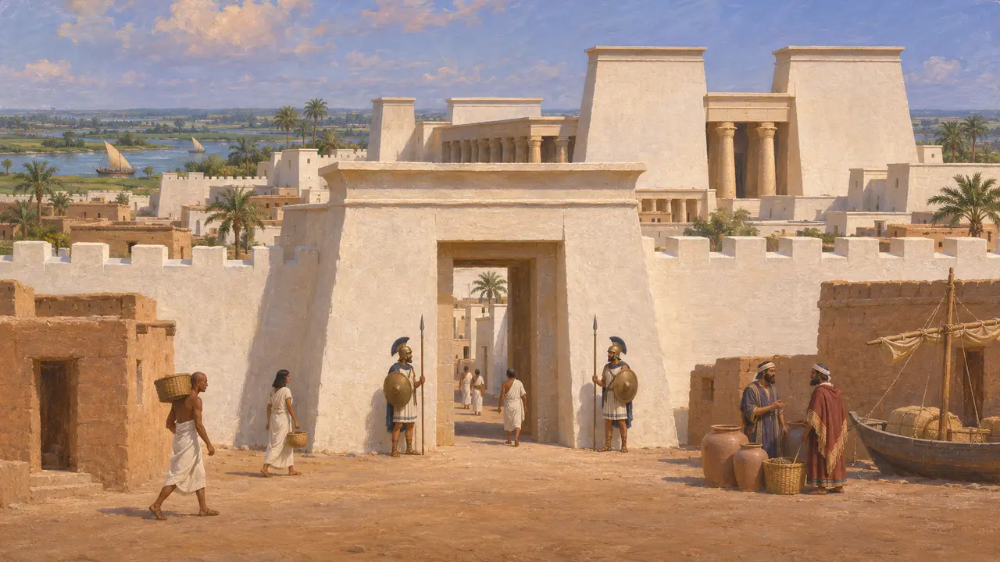
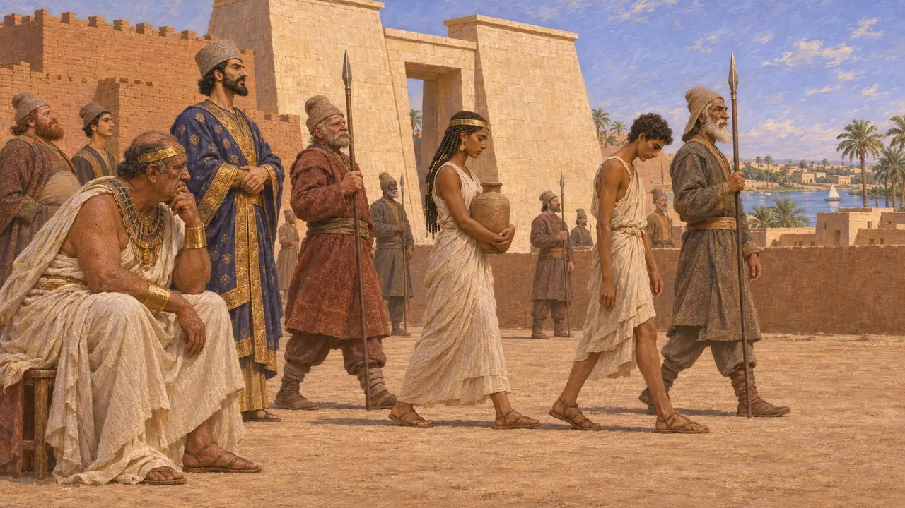
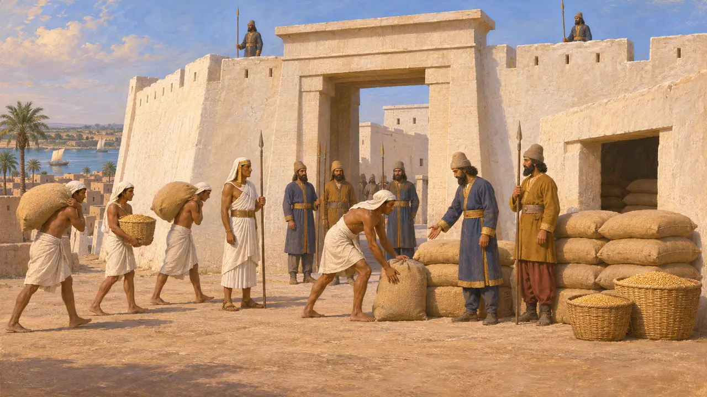
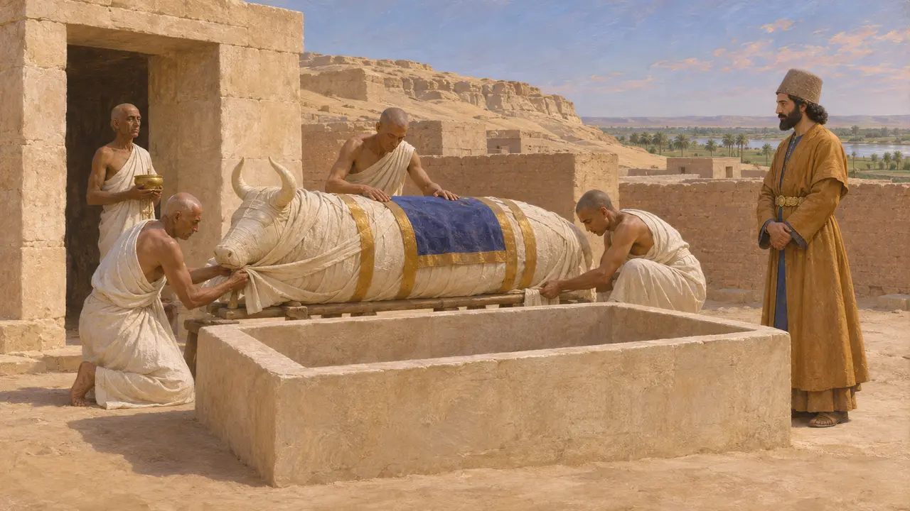
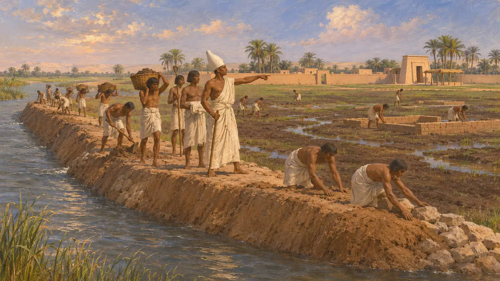

Mênfis
Antiga capital do Egito no vértice do Delta do Nilo, tomada por Cambises em 525 AEC
No jogo: Nível 2: O Portador da Lança
Mênfis ficava na margem oeste do Nilo, logo ao sul do Delta, morada do deus Ptá e, durante séculos, a principal cidade real e administrativa do Egito. Cambises a tomou após sua vitória em Pelúsio, provavelmente em 525 AEC. Sob o domínio persa, abrigava uma guarnição persa e provavelmente era a sede do sátrapa. Perto dali, em Sacara, os touros sagrados de Ápis eram sepultados em galerias subterrâneas.
No jogo: A fase de Mênfis se passa em 525 AEC, o ano da conquista de Cambises. Sua crônica segue Heródoto quanto aos touros Ápis, uma história que as estelas de Sacara complicam.

A cidade das Muralhas Brancas
Relato antigoOs egípcios chamavam a cidade de Muralhas Brancas, por causa de seu antigo núcleo fortificado, e os escritores gregos mantiveram o nome. Heródoto chama seu grande templo de templo de Hefesto, nome que ele dava a Ptah. Ele conta que Amásis transferiu soldados jônios e cários para Mênfis como sua guarda e menciona um bairro tírio ali, de modo que a cidade já tinha residentes estrangeiros antes da chegada dos persas.
Herodotus 2.112, 2.154

O cerco de 525 AEC
Relato antigoHeródoto conta que os egípcios fugiram para Mênfis após a derrota em Pelúsio. Cambises enviou rio acima um arauto persa num navio de Mitilene, e os egípcios o mataram junto com a tripulação. A cidade foi então sitiada até se render. Heródoto narra em seguida como Cambises pôs à prova o rei capturado, Psamético III, obrigando-o a ver seus filhos passarem diante dele em desonra.
Herodotus 3.13-14

Mênfis persa
Relato antigoHeródoto conta que o Egito fornecia grãos para os persas aquartelados na Fortaleza Branca de Mênfis e para suas tropas auxiliares. Tucídides mostra que a guarnição ainda estava lá décadas depois. Quando o Egito se revoltou, por volta de 459 AEC, persas, medos e egípcios leais defenderam a Muralha Branca, a terceira parte da cidade, contra os rebeldes e seus aliados atenienses.
Herodotus 3.91; Thucydides 1.104

Cambises e o touro Ápis
DisputadoHeródoto conta que Cambises viu os egípcios celebrando um novo Ápis e tomou aquilo como zombaria de seus fracassos. Segundo ele, o rei golpeou o touro na coxa, e o animal mais tarde morreu do ferimento. As estelas do Ápis escavadas em Sacara contam outra história: um touro foi sepultado no sexto ano de Cambises, num sarcófago dedicado em seu nome, e o sepultamento seguinte ocorreu sob Dario. A maioria dos historiadores trata o relato de Heródoto como tradição egípcia hostil, embora o encaixe das datas ainda seja debatido.
Herodotus 3.27-29; Apis stelae from the Serapeum at Saqqara

A fundação por Min
Lenda posteriorHeródoto ouviu dos sacerdotes que o primeiro rei, Min, represou o Nilo ao sul do local e drenou a terra para construir Mênfis e o templo de Ptá. A história preserva uma memória egípcia da grande antiguidade da cidade. Ela foi contada mais de dois mil anos depois dos acontecimentos que descreve.
Herodotus 2.99
Fontes
- Herodotus 3.13-14, 3.27-29, 3.91
- Apis stelae from the Serapeum at Saqqara
- Herodotus 2.99, 2.112, 2.154
- Thucydides 1.104
- P. Briant, From Cyrus to Alexander, 2002
- D. J. Thompson, Memphis under the Ptolemies, 1988